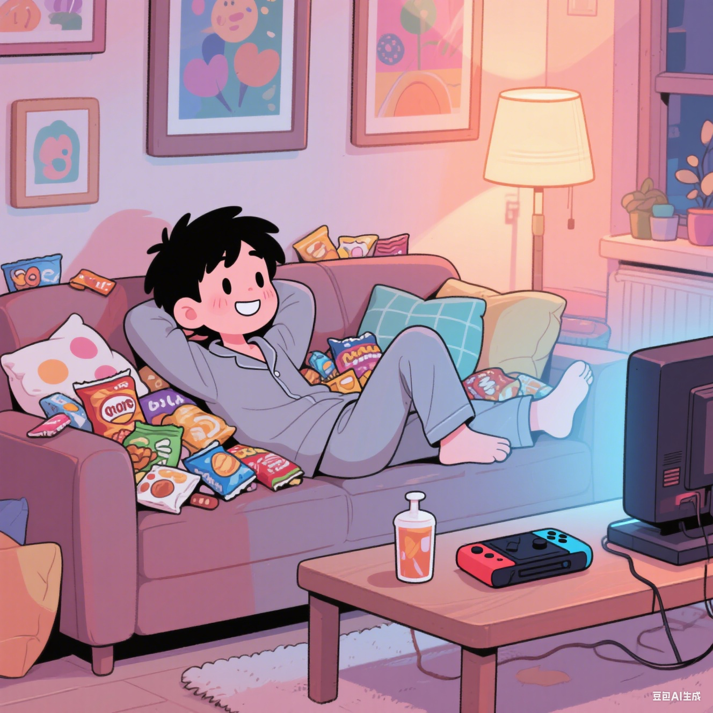

发布新帖子
请先登录后发布内容

驴思源
刚刚 · 公告
0 条评论
欢迎来到驴友的草料房
这里是我记录学习、分享实践的个人空间，欢迎大家交流讨论，一起成长进步！
张小明
2天前 · 项目讨论
8 条评论
关于任务管理应用的功能建议
使用了你的任务管理应用原型，感觉整体体验很流畅！有个小建议：是否可以增加日历视图，方便查看月度任务安排？另外标签颜色如果能自定义就更好了...

王小红
5天前 · 技术交流
5 条评论
UI设计中的颜色搭配请教
看了你分享的UI设计作品，颜色搭配很舒服！想请教一下在深色模式下如何选择按钮颜色？尝试了几种总是感觉不够和谐，有什么技巧吗？
登录社区
登录后可以发布帖子、评论和点赞
热门话题
社区规则
- 尊重他人，理性讨论
- 禁止发布广告和无关内容
- 技术讨论请保持专业性
- 有问题可联系博主处理
评论 (8)
感谢建议！日历视图已经在开发计划中了，预计下个版本会加入~ 标签颜色自定义是个好想法，我记下了！
同意楼上，另外希望能增加任务优先级设置，比如高/中/低